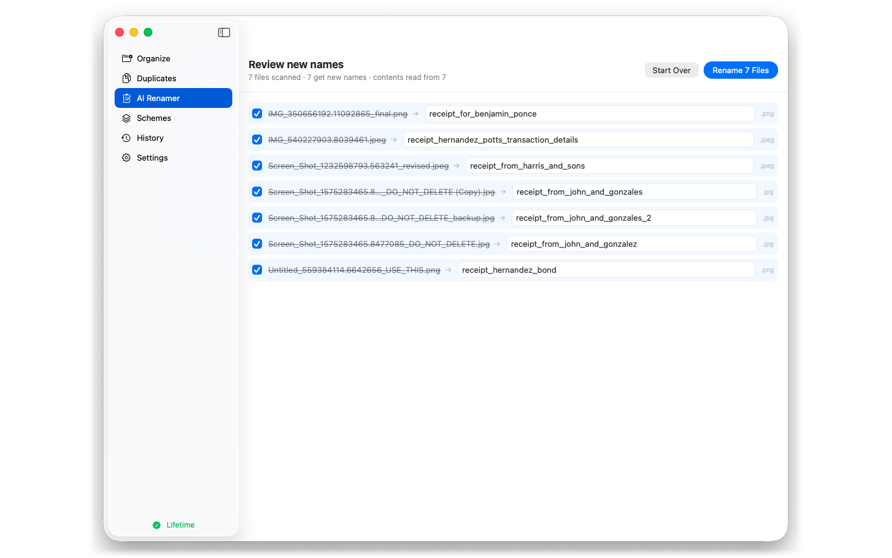

Most advice on how to organize files on Mac starts and ends with “make folders.” That’s why it doesn’t stick — folders are step three, not step one. A system that lasts is: decide the top level, remove duplicates, make names self-describing, and automate the boring parts. Here’s the whole thing, in the order that actually works.
Perfectionism at the top level is why organizing projects die. You don’t need a taxonomy; you need a place things clearly belong:
Projects (active work)Money (invoices, receipts, statements, tax)Reference (manuals, courses, downloaded everything)Archive (finished, keep-but-rarely-open)Downloads and Desktop are inboxes, not homes. Everything lands there; everything should leave within a week. If a document could go in two buckets, pick one and move on — Spotlight finds it either way. (For a worked example on one hopeless folder, see the mac file organizer cleanup guide.)
Sorting duplicates is wasted motion — you’ll file the same invoice twice, then wonder why “the numbers look doubled.” Clean first:
Ten minutes here saves an hour of filing ghosts.
Folders answer “where”; names answer “what.” The convention that scales is date-first plus subject:
2026-03-14_walmart_receipt.png 2026-03-15_hernandez_bond.pdf
Date-first sorts chronologically forever, and a subject prefix means Spotlight finds receipt without opening anything. The problem, of course, is that nobody renames 400 files by hand.
This is the part I automated. TidyMind’s AI Renamer reads the contents of each file — including images, via on-device OCR — and proposes descriptive names:

In the screenshot, seven camera-named images become receipt_for_benjamin_ponce and friends — the model read each image and wrote the name from what’s in it, dates first when the document shows its own. Nothing is blind-renamed: you get a review screen with per-file checkboxes, editable names, and a single Rename button. It runs entirely on-device (MLX, no uploads, no cloud).
Renaming receipts isn’t a niche need — it’s the whole “scan everything, find nothing” problem in one sentence.
For the filing itself, TidyMind’s Organize tab points at a messy folder — Downloads, Desktop, a project dump — and produces a plan before anything moves:
That last part matters more than the AI: the failure mode of auto-organizers is silent relocations. Review-first plus undo removes it.
If you’re on Windows or an older macOS, my earlier app AI File Organizer Pro does the content-based filing job there (Ollama-based, one-time purchase) — TidyMind is its complete redesign for modern Apple Silicon Macs, and I keep both on sale for the platforms they fit.
TidyMind reads your files’ contents, proposes the plan, and moves nothing until you approve — dedupe, rename, and file, fully on-device. Free to scan and review; macOS 15+, Apple Silicon.
Folders give one answer (“where does this live”), tags give a second (“what is this across projects”). Finder tags are free and sync with iCloud. Rule of thumb: folder = primary home, tag = cross-cutting label (tax-2026, active, someday). If you tag everything, you’ve rebuilt folders with extra clicks.
Systems decay without a small loop. Once a week:
Ten minutes weekly beats a weekend purge quarterly, and it’s the only reason my own Mac still passes the “Spotlight test” — type a subject, get the file, first result.
Dedupe, then three-to-five buckets, then automated renaming. TidyMind’s free scan covers the first and third steps; you approve every change.
It is when the tool is review-first. Nothing in TidyMind moves until you approve the plan, and any session can be undone. Everything runs on-device — no uploads, no accounts, no cloud.
TidyMind is the complete redesign — on-device MLX, AI Renamer, duplicates, Schemes — for macOS 15+ on Apple Silicon. Pro remains the option for Windows and older macOS. Same author, different generations.
No — scanning, AI analysis, plan review, rename proposals, and duplicate scanning are free. Pro ($14.99/year or $29.99 lifetime) unlocks applying changes. Details on the TidyMind page.
I'm Muhammad Karim — transportation researcher; I build privacy-first, local-first tools: TidyMind, AI File Organizer Pro, PrivateRedact, Self-Hosted RAG, TunnelMate.